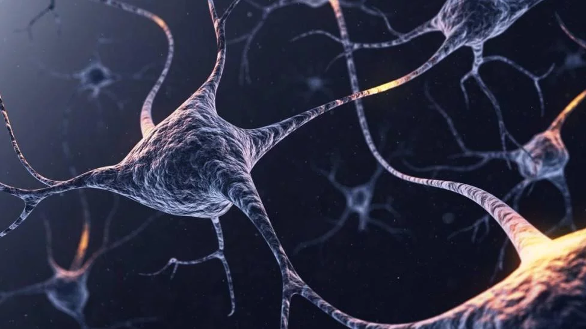

Nesse sentido, um dos caminhos é aplicar os conhecimentos da computação neural, de Machine Learning (aprendizado de máquina) e de Inteligência Artificial (IA) para a tradução do funcionamento da versão original desse sistema, o cérebro biológico. Pelo menos é nisso que acredita Blake Richards, professor da Universidade de Toronto e membro da CIFAR AI (Instituto Canadense para Pesquisas Avançadas). Com o aumento das doenças neurológicas, a ciência deve buscar novas soluções e entendimentos para o cérebro humano. Inclusive, essa é uma grande emergência no setor da saúde, em que a população tende a envelhecer e enfrentar cada vez mais problemas como demência. Assim, as redes neurais artificiais devem ser colocadas a serviço da compreensão dos cérebros humanos, defende o professor. De acordo com Richards, "nossos pensamentos e comportamentos são gerados por cálculos que ocorrem em nossos cérebros. Para tratar, efetivamente, distúrbios neurológicos que alteram nossos pensamentos e comportamentos, como esquizofrenia ou depressão, provavelmente precisamos entender como os cálculos no cérebro dão errado." Nessa história, o desafio é entender "o cérebro como um sistema computacional e não como uma coleção de células indecifráveis", como o cientista descreveu em artigo publicado pela Nature Neuroscience. Ou seja, o conceito é entender o todo, e não o funcionamento de cada minúscula parte (pelo menos, por enquanto). Para melhorar o entendimento do cérebro humano, Richards destaca três conceitos e pontos, vindos direto das redes neurais artificiais: |
| 
|
Modelos de rede cerebral |
| As redes neurais artificiais são modelos computacionais inspiradas nas atividades e funções dos neurônios biológicos. Sobre a forma de construção dessas tecnologias, Richards explica que o usuário deve começar "por projetar a arquitetura da rede e em como os diferentes componentes da rede são conectados entre si. Em seguida, você define a meta de aprendizado para a arquitetura, como um 'aprenda a prever o que verá a seguir'. Depois, você define uma regra, que informa à rede, como alterar para atingir esse objetivo usando os dados que recebe."
Embora seja um sistema complexo, em nenhum momento é especificado como cada neurônio nessa rede artificial funcionará. Para esses casos, é a própria rede que determinará como cada neurônio deve funcionar para a melhor realização da tarefa. "Acredito que o desenvolvimento do cérebro é, provavelmente, o produto de um processo semelhante, tanto em uma escala evolutiva do tempo quanto na escala do aprendizado individual durante a vida", comenta o professor. |
Funções neuronais |
|
Mais uma vez Richards se contrapõe à ideia de procurar entender como os neurônios funcionam individualmente. Afinal, é possível que esses neurônios sejam o resultado de um processo de otimização, muito parecido com o que ocorre nas redes neurais artificiais. Traçando um paralelo no mundo da computação, "os diferentes componentes das redes neurais artificiais costumam ser muito difíceis de entender. Não existe uma descrição matemática ou verbal simples que explique exatamente o que eles fazem", completa o professor.
Para uma maior compreensão do cérebro a partir da IA, deve-se examinar a arquitetura do órgão como se fosse uma estrutura de rede. Isso além das formas de otimização que acontece ao passar do tempo, durante a vida de uma pessoa. |
Otimizando estruturas |
|
Em um experimento, os neurônios que liberam a dopamina — o neurotransmissor conhecido pela sensação de prazer — no cérebro parecem reagir também com recompensas inesperadas. É o caso de uma pessoa que ganha um bombom de surpresa, durante o dia. Esse diferente tipo de sinal é chamado erro de previsão de recompensa e é frequentemente usado para treinar redes neurais artificiais para maximizar o entendimento sobre as recompensas que recebem.
Por exemplo, ao programar uma rede neural artificial para interpretar os pontos recebidos em um videogame, o desenvolvedor pode usar erros de previsão de recompensa para treinar a rede em como jogar, da melhor forma possível, o videogame. Incluindo, o treinamento para recompensas supressas e aleatórias — afinal, o inesperado também é parte da experiência humana. "No cérebro real, como nas redes neurais artificiais, mesmo que não entendamos o que cada sinal individual signifique [como o caso do boost surpresa], podemos entender o papel desses neurônios e dos neurônios que recebem seus sinais em relação ao objetivo de aprendizado de maximizar recompensas", afirma Richards. Diante da capacidade das redes neurais artificiais em resolver problemas complexos, ela pode, sim, ajudar no processo de descoberta dos segredos guardados na mente humana. |